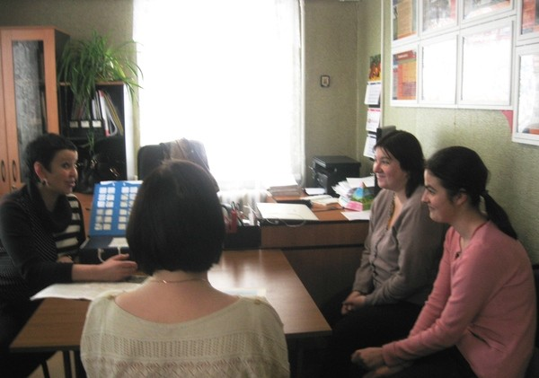
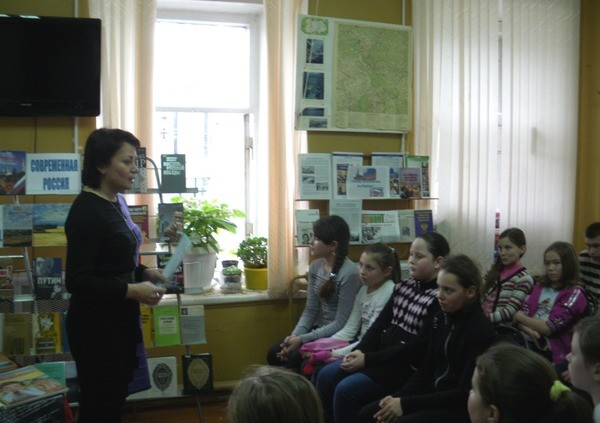
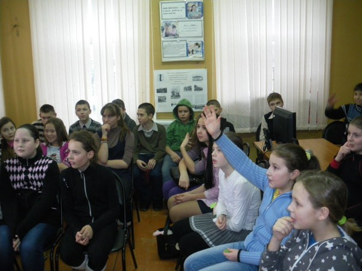
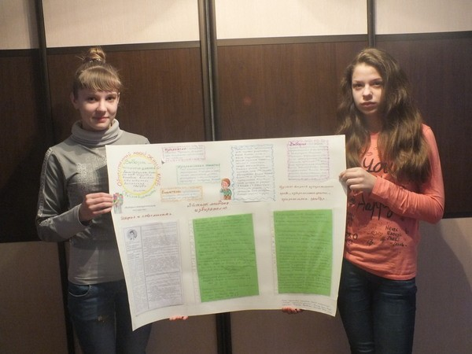

Отчет о проведении Недели молодого избирателя
С 10 по 16 февраля 2014 года в Тарусском районе прошла «Неделя молодого избирателя», цель которой - правовое воспитание молодежи. В рамках «Недели молодого избирателя» проводились мероприятия информационного характера о понятии выборов, о процедуре их проведения, а также мероприятия, способствующие пополнению знаний не только молодых избирателей, но и учащихся общеобразовательных школ.
Особое впечатление у будущих избирателей вызвала проведенная на базе районной библиотеки правовая викторина.


Необычным стало заседание «круглого стола» молодежного клуба «Выборы – территория диалога», на котором постоянные участники клуба предложили расширить формат мероприятия и включить в него патриотический компонент – поэтические посвящения России – так как выборы, по мнению молодых избирателей, это высшая степень проявления патриотизма и гражданственности.
Для выявления политической ориентации молодежи и наличия у них интереса к выборам было проведено анкетирование «Молодежь и выборы».
Следует отметить, что организаторами мероприятий в рамках «Недели молодого избирателя» была проведена огромная подготовительная работа, посильную помощь в этом оказали члены Молодежной территориальной избирательной комиссии Тарусского района.
Первым мероприятием в рамках Недели молодого избирателя стала встреча молодых избирателей с депутатом представительного органа СП «Деревня Похвиснево» М.А.Барановой. Мероприятие проходило в стенах администрации сельского поселения.
Формой мероприятия стала дискуссия в виде вопрос-ответ. Молодежи было предложено сформулировать от трех до шести вопросов для депутата Сельской Думы. Стоит отметить, что к данной встрече Марина Анатольевна Баранова отнеслась серьезно, вначале встречи она рассказала о своей деятельности как депутата, и о том, как решаются насущные проблемы поселения. Затем ответила на все вопросы молодежи, а они, надо признать, были разнообразными и многочисленными.
Молодых избирателей интересовали как взаимоотношения между депутатами, так и конкретные проблемы. Они интересовались мнением депутата о проблемах алкоголизма и наркомании среди молодежи, о возможности создания общественных организаций, которые оказывали бы помощь ветеранам и пожилым людям и др.


За более чем часовую беседу было озвучено несколько десятков вопросов. Ответы на одни из них были даны сразу, другие требуют дальнейшего рассмотрения и более подробного анализа.
Радует, что молодежь XXI века не остается равнодушной к тому, что происходит в общественной, политической и экономической жизни нашей страны.
В читальном зале районной библиотеки прошла встреча с будущими избирателями, учащимися МБОУ «Средняя общеобразовательная школа № 2 им. ученого В.З.Власова» на тему: «Вы правы, если знаете право». Вначале встречи председатель территориальной избирательной комиссии Тарусского района Н.В. Войнова провела разъяснительную работу, познакомив будущих избирателей с информацией о процедуре выборов и основах избирательного процесса. А затем ребятам было предложено поучаствовать в правовой викторине, которая закрепила полученные знания о выборах.
В завершение мероприятия участникам, получившим наибольшее количество баллов за правильные ответы, были вручены призы с государственной символикой и символикой Избирательной комиссии Калужской области.
В общеобразовательных учреждениях Тарусского района с целью пропаганды правовых знаний для школьников прошли классные часы на тему: «Твой выбор сегодня – твоё будущее завтра». Мероприятия также приурочены к «Неделе молодого избирателя».
В процессе общения с будущими избирателями организаторами мероприятий были затронуты не только вопросы об избирательном праве и избирательной системе РФ, но и актуальные проблемы выбора в нашем современном обществе, стоящие на сегодняшний день перед ребятами.
В течение всей недели на базе МБУК «ЦБС» Тарусского района проходила презентация информационной выставки под названием «Новое поколение выбирает», размещенная в читальном зале библиотеки.
Библиографом Т.А.Зориной и библиотекарем О.В.Крыловой вниманию молодежи были предложены различные книжные издания и издания периодической печати. Представленный материал предполагает рассказ о значении выборов в современном обществе, а также располагает теми правовыми нормами, которые должен знать любой российский гражданин, в том числе и молодой избиратель.
В рамках Недели молодого избирателя в здании Кузьмищевской сельской библиотеки состоялось заседание «круглого стола» на тему: «Местное самоуправление – что это такое», организованное работниками библиотеки при поддержке территориальной избирательной комиссии Тарусского района. Участниками мероприятия стали члены молодежного клуба «Выборы – территория диалога», представители администрации СП «Село Кузьмищево» и активные жители села.
Второй год молодежный дискуссионный клуб «Выборы – территория диалога» работает в сельском поселении «Село Кузьмищево». Этот проект, активное участие в котором принимает библиотекарь Т.А.Амирханян, помогает молодым избирателям и всем неравнодушным жителям села знакомиться с принципами избирательной системы, дает возможность вникнуть в организацию предвыборных кампаний, а также способствует интересному и познавательному общению разных категорий населения (дети, пенсионеры, молодежь).
Программа мероприятия включала в себя не только заседание «круглого стола», но и викторину «Правовое государство», а также поэтические посвящения России по произведениям В.Бокова, К.Симонова, А.Прокофьева. Будущие избиратели проявили инициативу и подготовили информационный плакат «В блокнот молодому избирателю».
Участники мероприятия увлеченно участвовали в дебатах, спорили, отвечали на вопросы викторины. По их мнению, встреча помогла им не только систематизировать информацию по вопросам избирательного права, но и подарила хорошую возможность узнать много нового о своей Родине.
В дальнейших планах клуба – дискуссии, встречи, игры. Хочется верить, что молодежь, принимающая участие в работе клуба, будет так же успешно и активно участвовать в политической жизни страны.
С 10.02.2014 по 16.02.2014 территориальная избирательная комиссия Тарусского района проводила социологический опрос на тему «Молодежь и выборы» с целью выявления уровня избирательной и политической культуры молодежи. В опросе приняли участие молодые избиратели учреждений и организаций Тарусского района. Вниманию участников была предложена анкета из вопросов, направленных на выявление информированности молодежи и её гражданской позиции.
Данные ответов говорят о понимании молодежью значимости выборов и о намерении участвовать в избирательной кампании. Однако многие респонденты имеют недостаточное представление о политических партиях и общественных движениях. В дальнейшем информация, полученная в ходе опроса, позволит Территориальной избирательной комиссии Тарусского района усовершенствовать работу по правовому просвещению молодежи с учетом её потребностей.
В заключение хотелось бы обратиться ко всем молодым избирателям Тарусского района. Вы являетесь наиболее предприимчивой и энергичной частью общества, резервом и движущей силой будущего поколения. Смело овладевайте новыми знаниями, умениями и навыками, активнее участвуйте в управлении государством и старайтесь не допускать того, чтобы без вашего участия решалось будущее России. Помните – у вас есть право выбора!
Статья, фото - Н.В. Войнова


{kind=link}
{kind=link}
{kind=link}
{kind=link}
{kind=link}
{kind=link}
{kind=link}
{kind=link}
{kind=link}
{kind=link}
{kind=link}